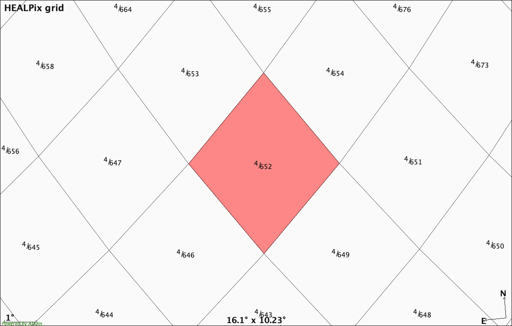
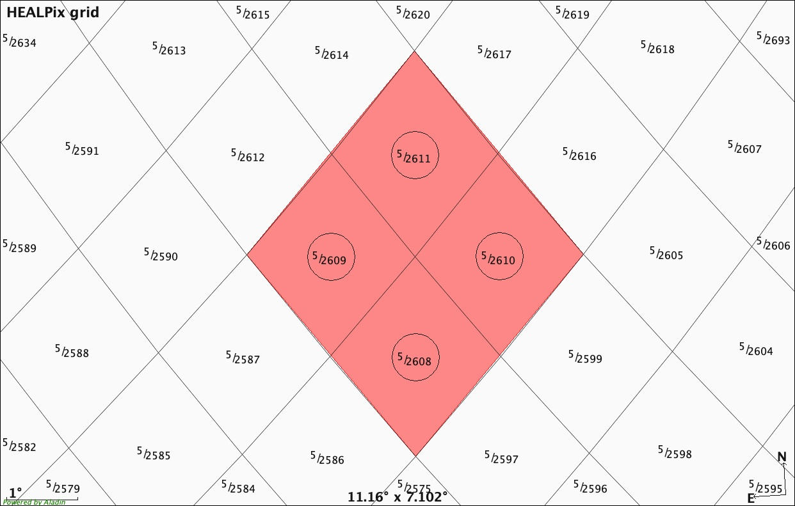
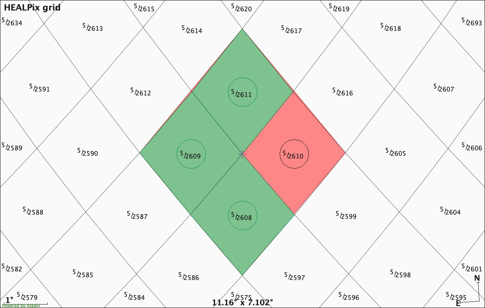

Multi Order Coverage data structure to plan multi-messenger observations
Contents
Multi Order Coverage data structure to plan multi-messenger observations#
Giuseppe Greco¹
INFN, Sezione de Perugia, 1-06123 Perugia, Italy
This notebook is a tutorial associated to the article Multi Order Coverage data structure to plan multi-messenger observations.
We will first explore Multi-Order Coverage (MOC) data structure manipultation, then we will see how astroplan and Space-Time Multi Order Coverage (STMOC) can be combined. The final step is a concrete example illustrating how STMOCS can be build in a few seconds to plan observations from three ground observatories of the full sky localisation produced after detection of a gravitational wave.
Setting the notebook#
# General use python packages
from pathlib import Path
from datetime import timedelta
import numpy as np
from IPython import display
# Healpix and MOC packages
from mocpy import MOC, STMOC
from cdshealpix import healpix_to_skycoord
# Common astronomy packages
import astropy.units as u
from astropy.time import Time
from astropy.table import QTable
from astropy.utils.data import download_file
from astropy.io import fits
# Visualisation widget
import ipyaladin as ipyal
# Library to bluid observation plan
from astroplan import Observer
# Communication between this notebook and other astro softwares
from astropy.samp import SAMPIntegratedClient, SAMPHubError
# define a path to store data
path = Path.cwd() / "Data/Multi-order-coverage-to-plan-MMA/"
path.mkdir(parents=True, exist_ok=True)
SAMP function We create a function based on SAMP (Simple Application Messaging Protocol) to see the MOC visibility map in an Aladin session.
def send_via_samp(url="", filename=""):
"""Sending MOC file over SAMP.
Parameters
----------
url : str
URL to the file
filename : str
human - readable name for the MOC file
Returns
-------
a MOC file is transmitted in tools in which SAMP Hub is running
"""
client = SAMPIntegratedClient()
client.connect()
params = {}
params["url"] = str(url / filename) # has to be converted to string for marshall
print(params["url"])
params["name"] = filename
message = {}
message["samp.mtype"] = "coverage.load.moc.fits"
message["samp.params"] = params
client.notify_all(message)
client.disconnect()
Manipulating MOCs#
In this first section, we build an elementary MOC, describe essential algorithms and perform basic tests.
First, we create a MOC region with the HEALPix index = 652 at order = 4 applying the method from_healpix_cells from mocpy.
ipix = np.array([652], dtype="uint64")
depth = np.array([4], dtype="uint8")
moc_test = MOC.from_healpix_cells(ipix, depth)
print(type(moc_test))
moc_test
<class 'mocpy.moc.moc.MOC'>
[[734086739261390848 735212639168233472]]
Then, we write the MOC region in an external file named TEST.fits serialized in a FITS format.
moc_test.write(path.parent / "TEST.fits", format="fits", overwrite=True)
display.Image(path.parent / "images/MOC-to-plan-MMA/Fig1.jpg")

Figure 1. HEALPix grid at order = 4. In red, the MOC region with HEALPix index = 652. This represents the MOC we created.
Now, we read the MOC file TEST.fits and we find the MOC order: the depth of the smallest HEALPix cells. Of course, we will find an order = 4 as set when we created the MOC.
# Read MOC map.
moc = MOC.from_fits(path / "TEST.fits")
# Find MOC order
moc_order = moc.max_order
print("moc_order =", moc_order)
moc_order = 4
Here, we serialize the MOC from fits to json/dictionary with the keys and values representing the orders and the pixel indices, respectively. Of course, in our case we will find a dictionary with key = 4 and value = 652, the values used in the original MOC creation.
# Serialize the MOC from fits to json/dict.
moc_json = moc.serialize(format="json")
moc_json
{'4': [652]}
Next, we want to increase the MOC order from 4 to 5 and to calculate the associated HEALPix indexes at that order. MOC uses the NESTED numbering scheme. Thus, each spatial MOC cell can be stored as one single interval ranging from \([npix \times 4^{(max\_order - order)}]\) to \([(npix+1) \times 4^{(max\_order - order)}-1] \).
If you want to play around parameters here, you need to set a new MOC order greater than or equal to the order defined in the original MOC.
# Sets a new MOC order: new MOC order >= original MOC order.
new_order = 5
# Init. a list of HEALPix indices.
healpix_indices = []
# Read MOC JSON file.
for key, value in moc_json.items():
order = int(key)
# Flatten cells.
for npix in value:
first_index = npix * 4 ** (new_order - moc_order)
last_index = (npix + 1) * 4 ** (new_order - moc_order) - 1
# Resulting list of flatten cells.
for healpix_index in np.arange(first_index, last_index + 1):
healpix_indices.append(healpix_index)
healpix_indices
[2608, 2609, 2610, 2611]
Figure 2 shows the HEALPix grid at the order = 5. In red, the selected MOC region is depicted. You can visualize the HEALPix indices: 2608, 2609, 2610, 2611 as calculated in our code.
When the entire collection of cells in a MOC map is
computed at the same
order, we can invoke the method healpix to skycoord from the cdshealpix python module.
This method converts HEALPix indices to celestial coordinates. The input is a 1-D array of HEALPix indices and the resulting celestial coordinates are returned in a SkyCoord high-level object as defined in astropy. They are the sky coordinates of the center of the HEALPix cells and marked with a circle in Figure 2.
skycoords = healpix_to_skycoord(healpix_indices, new_order)
skycoords
<SkyCoord (ICRS): (ra, dec) in deg
[(202.5 , 31.38816646), (203.90625, 32.7971683 ),
(201.09375, 32.7971683 ), (202.5 , 34.22886633)]>
display.Image(path.parent / "images/MOC-to-plan-MMA/Fig2.jpg")

Figure 2.. HEALPix grid at order = 5 with the HEALPix indices, 2608, 2609, 2610, 2611. They are the same indices as provided by our code. The sky coordinates of the center of the HEALPix cells are marked with circles. The sky coordinates are computed by the healpix to skycoord method in cdshealpix.
You can interactively visualize the results with the following Aladin widget. To see the HealPix grid, select it in the manage layers  menu.
menu.
aladin = ipyal.Aladin(target="13:29:59.9947023, +32:47:54.490452", fov=35)
aladin
A MOC map can also be added to the Aladin widget by adding it to the variable aladin:
moc_test = {"5": [2608, 2609, 2610, 2611]}
aladin.add_moc_from_dict(
moc_test,
{"color": "red", "opacity": 0.4, "adaptativeDisplay": False, "name": "TEST"},
)
Astroplan#
In this second section, we cover the use of astroplan a python library useful for observation planning and scheduling.
First, we want to define the airmass in each HEALPix index using the astroplan module. In particular, we define the airmass in the Haleakala site at 2019-04-25 14:18:05.018 UTC.
# Set Observer: Haleakala.
haleakala = Observer.at_site("haleakala")
# Set observational time.
start_time = Time("2019-04-25 12:30:00")
haleakala
<Observer: name='haleakala',
location (lon, lat, el)=(-156.169 deg, 20.71552 deg, 3047.9999999999245 m),
timezone=<UTC>>
Haleakala info from Observer class in astroplan.
print(
f"""We could apply any of the methods listed here
to the object haleakea {dir(haleakala)}"""
)
We could apply any of the methods listed here
to the object haleakea ['__class__', '__delattr__', '__dict__', '__dir__', '__doc__', '__eq__', '__format__', '__ge__', '__getattribute__', '__gt__', '__hash__', '__init__', '__init_subclass__', '__le__', '__lt__', '__module__', '__ne__', '__new__', '__reduce__', '__reduce_ex__', '__repr__', '__setattr__', '__sizeof__', '__str__', '__subclasshook__', '__weakref__', '_altitude_trig', '_calc_riseset', '_calc_transit', '_determine_which_event', '_horiz_cross', '_is_broadcastable', '_preprocess_inputs', '_two_point_interp', 'altaz', 'astropy_time_to_datetime', 'at_site', 'datetime_to_astropy_time', 'is_night', 'local_sidereal_time', 'location', 'midnight', 'moon_altaz', 'moon_illumination', 'moon_phase', 'moon_rise_time', 'moon_set_time', 'name', 'noon', 'parallactic_angle', 'pressure', 'relative_humidity', 'sun_altaz', 'sun_rise_time', 'sun_set_time', 'target_hour_angle', 'target_is_up', 'target_meridian_antitransit_time', 'target_meridian_transit_time', 'target_rise_time', 'target_set_time', 'temperature', 'timezone', 'tonight', 'twilight_evening_astronomical', 'twilight_evening_civil', 'twilight_evening_nautical', 'twilight_morning_astronomical', 'twilight_morning_civil', 'twilight_morning_nautical']
Does the time we set correspond to night time at Haleakala? You can answer it using is_night method and setting the astronomical twilight.
# Check if it is night in Haleakala at defined time:
# -18 degree horizon (evening astronomical twilight).
night = haleakala.is_night(start_time, horizon=-18 * u.deg)
print("Is it night?", night)
Is it night? True
We have all needed information to calculate the airmass at the sky coordinates determined in the first section.
# Airmass calculation
airmass_values = haleakala.altaz(start_time, skycoords).secz
for airmass_value, skycoord in zip(airmass_values, skycoords):
print(f"airmass: {airmass_value.round(2)} {skycoord} ")
airmass: 1.28 <SkyCoord (ICRS): (ra, dec) in deg
(202.5, 31.38816646)>
airmass: 1.27 <SkyCoord (ICRS): (ra, dec) in deg
(203.90625, 32.7971683)>
airmass: 1.31 <SkyCoord (ICRS): (ra, dec) in deg
(201.09375, 32.7971683)>
airmass: 1.29 <SkyCoord (ICRS): (ra, dec) in deg
(202.5, 34.22886633)>
To only select sky area with airmass < 1.30, we create a new MOC with those sky coordinates. We will call it MOC_observability.
It can be useful to create an astropy table with skycoords and airmass_values as columns. Then we filter the airmass_values column from 1.00 to 1.30.
table = QTable([skycoords, airmass_values], names=["skycoords", "airmass_value"])
# Mask table with selected airmass values.
observability_table = table[
(table["airmass_value"] >= 1.0) & (table["airmass_value"] <= 1.3)
]
Combining astroplan and STMOC#
We invoke from_skycoords method in mocpy and write the MOC observability in an output file named moc_observability_haleakala.
# MOC from sky coordinates
moc_observability_haleakala = MOC.from_skycoords(
observability_table["skycoords"], new_order
)
# Write MOC in fits
moc_observability_haleakala.write(
path / "moc_observability_haleakala", format="fits", overwrite=True
)
The MOC observability is shown in green in Figure 3 over the original MOC. The HEALPix index = 2610 at order = 5 is not considered in the MOC visibility at the coordinates RA = 201.09375 \(^\circ\), DEC = 32.7971683 \(^\circ\). This is because its associated airmass value = 1.31 is outside the airmass range we selected to create the MOC visibility from Haleakala.
# Sky position of HEALPix index = 2610 at order = 5.
skycoord = healpix_to_skycoord(2610, 5)
skycoord
<SkyCoord (ICRS): (ra, dec) in deg
[(201.09375, 32.7971683)]>
display.Image(path.parent / "images/MOC-to-plan-MMA/Fig3.jpg")

Figure 3. In green, the MOC visibility from the Haleakala site with airmass ranges from 1.00 to 1.30 over the original MOC area in red. For an interactive visualization, you can run the code below and use the Aladin widget initialized at the beginning of the tutorial.
moc_obsevability = {"5": [2608, 2609, 2611]}
aladin.add_moc_from_dict(
moc_obsevability,
{
"color": "green",
"opacity": 0.7,
"adaptativeDisplay": False,
"name": "MOC observability",
},
)
Adding temporal information to an (Observability) MOC#
The ability to transform any spatial MOC generated from telescope footprints, image surveys, catalogues, gravitational-wave sky localizations, MOC visibility etc. into spatial and temporal MOC (STMOC) offers several interoperable approaches. In the next sections, we will discuss how to filter candidate transients.
To encode temporal information in a space (observability) MOC, we apply the method from_spatial_coverages from mocpy. We assume an exposure time of 10 minutes: from 2019-04-25 12:30:00 to 2019-04-25 12:40:00.
# Create a Space and Time MOC from a space MOC.
space_time_moc_obs = STMOC.from_spatial_coverages(
Time(["2019-04-25 12:30:00"]),
Time(["2019-04-25 12:40:00"]),
[moc_observability_haleakala],
)
# Write space and time MOC
space_time_moc_obs.write(path / "space_time_moc_obs", overwrite=True)
Filtering transient candidates
To filter transient candidates in space and in time simultaneously, we use the contains method in mocpy. It returns a boolean mask array of the positions lying inside (or outside) the MOC instance. Good performances are obtained thanks to the core functions written in Rust programming language.
We consider two transients at sky positions of
transient1: (RA = 202.49997 \(^\circ\), DEC = 32.79846 \(^\circ\)) observed at UTC time 2019-04-25T12:33:00
transient2: (RA = 202.69392 \(^\circ\), DEC = 34.02011 \(^\circ\)) observed at UTC time 2019-04-25T12:50:00
Both candidate transients fall inside our MOC region but only the first one is consistent with the exposure time of that region, see next cells:
# An astropy table with the 2 transients is created.
transient_tb = QTable()
# ID candidate transients
transient_tb["ID"] = ["transient1", "transient2"]
# Transient positions
transient_tb["ra"] = [202.49997, 202.69392] * u.deg
transient_tb["dec"] = [32.79846, 34.02011] * u.deg
# Transient time observations
transient_tb["time"] = Time(["2019-04-25T12:33:00", "2019-04-25T13:45:00"])
print(transient_tb)
ID ra dec time
deg deg
---------- --------- -------- -----------------------
transient1 202.49997 32.79846 2019-04-25T12:33:00.000
transient2 202.69392 34.02011 2019-04-25T13:45:00.000
# Filtering transients in space and time.
space_time_moc_obs.contains(
transient_tb["time"], transient_tb["ra"], transient_tb["dec"]
)
array([ True, False])
As expected, the boolean mask returns True only for the transient1.
Concrete example : planning observations for a GW follow up#
Here we describe the essential steps to delimit portions of a MOC coverage that are observable from a specific astronomical site within a fixed time interval and a defined range of airmass values. We start with the 90% credible region of the gravitational-wave event GW190425. The credible region is encoded in a MOC data structure. In order to show the potential of MOCs to manage complex and irregular sky areas, the 90% credible region of GW190425 is prepocessed as discussed in Sections 4.2 and 4.3. The MOC region is accessible from the link here. All steps are shown in the video tutorial focusing in the main Aladin graphical user interface.
For running the code, we consider the merger time of GW190425 from the image’s header.
# Download the initial (BAYESTAR)sky map of GW190425 from GraceDB.
bayesian = download_file(
"https://gracedb.ligo.org/api/superevents/S190425z/files/bayestar.fits.gz,0",
cache=True,
)
# Get merger time from image's header.
hdul = fits.open(bayesian)
merger_time = Time(hdul[1].header["DATE-OBS"])
print("The merger time is", merger_time)
The merger time is 2019-04-25T08:18:05.018
# Define an observatory from the astroplan list
observatory_name = "haleakala"
# Define observatory in the astroplan Observer class
observatory_astroplan_observer = Observer.at_site(observatory_name)
observatory_astroplan_observer
<Observer: name='haleakala',
location (lon, lat, el)=(-156.169 deg, 20.71552 deg, 3047.9999999999245 m),
timezone=<UTC>>
# Check if it is night in your Observatory at the merger time:
# -18 degree horizon (evening astronomical twilight).
night = observatory_astroplan_observer.is_night(merger_time, horizon=-18 * u.deg)
print(f"Is night in {observatory_name} ?", night)
Is night in haleakala ? True
If it is night in your observatory, we set as start time the merger time of the event, otherwise, we find the nearest twilight astronomical evening.
if night: # starts as soon as the merger if it is nightime at the observatory
start_time = merger_time
else:
# else, wait for the nearest twilight astronomical evening
twilight_evening_astronomical = (
observatory_astroplan_observer.twilight_evening_astronomical(
merger_time, which="nearest"
)
)
start_time = twilight_evening_astronomical
print("Start time for the first observation:", start_time)
Start time for the first observation: 2019-04-25T08:18:05.018
# Init. list for schedule observation
observatory_time_obs = []
# Set the airmass range to create the MOC visibility
airmass_max = 2
airmass_min = 1
# Read the MOC map.
moc = MOC.from_fits(path / "processed_moc_skymap.fits")
# Find MOC Order
order = moc.max_order
print("MOC order:", order)
MOC order: 11
Here, we want to calculate the visibility area within the previous MOC from the specific observatory site, at a given time and setting the airmass values.
# Serialize the MOC from fits to json/dict.
moc_json = moc.serialize(format="json")
# Init. a list of HEALPix indices.
healpix_indices = []
# Set a MOC order. MOC order >= max order in the original MOC.
input_order = order
print("input_order: ", input_order)
# Read MOC JSON file.
for key, value in moc_json.items():
order = int(key)
# Flatten cells.
for npix in value:
first_index = npix * 4 ** (input_order - order)
last_index = (npix + 1) * 4 ** (input_order - order) - 1
# Resulting list of flatten cells.
for healpix_index in np.arange(first_index, last_index + 1):
healpix_indices.append(healpix_index)
healpix_indices
input_order: 11
[8388608,
8388609,
8388610,
8388611,
8388612,
8388613,
8388614,
8388615,
8388616,
8388617,
8388618,
8388619,
8388620,
8388621,
8388622,
8388623,
8388624,
8388625,
8388626,
8388627,
8388628,
8388629,
8388630,
8388631,
8388632,
8388633,
8388634,
8388635,
8388636,
8388637,
8388638,
8388639,
8388640,
8388641,
8388642,
8388643,
8388644,
8388645,
8388646,
8388647,
8388648,
8388649,
8388650,
8388651,
8388652,
8388653,
8388654,
8388655,
8388656,
8388657,
8388658,
8388659,
8388660,
8388661,
8388662,
8388663,
8388664,
8388665,
8388666,
8388667,
8388668,
8388669,
8388670,
8388671,
8388672,
8388673,
8388674,
8388675,
8388676,
8388677,
8388678,
8388679,
8388680,
8388681,
8388682,
8388683,
8388684,
8388685,
8388686,
8388687,
8388688,
8388689,
8388690,
8388691,
8388692,
8388693,
8388694,
8388695,
8388696,
8388697,
8388698,
8388699,
8388700,
8388701,
8388702,
8388703,
8388704,
8388705,
8388706,
8388707,
8388708,
8388709,
8388710,
8388711,
8388712,
8388713,
8388714,
8388715,
8388716,
8388717,
8388718,
8388719,
8388720,
8388721,
8388722,
8388723,
8388724,
8388725,
8388726,
8388727,
8388728,
8388729,
8388730,
8388731,
8388732,
8388733,
8388734,
8388735,
8388736,
8388737,
8388738,
8388739,
8388740,
8388741,
8388742,
8388743,
8388744,
8388745,
8388746,
8388747,
8388748,
8388749,
8388750,
8388751,
8388752,
8388753,
8388754,
8388755,
8388756,
8388757,
8388758,
8388759,
8388760,
8388761,
8388762,
8388763,
8388764,
8388765,
8388766,
8388767,
8388768,
8388769,
8388770,
8388771,
8388772,
8388773,
8388774,
8388775,
8388776,
8388777,
8388778,
8388779,
8388780,
8388781,
8388782,
8388783,
8388784,
8388785,
8388786,
8388787,
8388788,
8388789,
8388790,
8388791,
8388792,
8388793,
8388794,
8388795,
8388796,
8388797,
8388798,
8388799,
8388800,
8388801,
8388802,
8388803,
8388804,
8388805,
8388806,
8388807,
8388808,
8388809,
8388810,
8388811,
8388812,
8388813,
8388814,
8388815,
8388816,
8388817,
8388818,
8388819,
8388820,
8388821,
8388822,
8388823,
8388824,
8388825,
8388826,
8388827,
8388828,
8388829,
8388830,
8388831,
8388832,
8388833,
8388834,
8388835,
8388836,
8388837,
8388838,
8388839,
8388840,
8388841,
8388842,
8388843,
8388844,
8388845,
8388846,
8388847,
8388848,
8388849,
8388850,
8388851,
8388852,
8388853,
8388854,
8388855,
8388856,
8388857,
8388858,
8388859,
8388860,
8388861,
8388862,
8388863,
8388864,
8388865,
8388866,
8388867,
8388868,
8388869,
8388870,
8388871,
8388872,
8388873,
8388874,
8388875,
8388876,
8388877,
8388878,
8388879,
8388880,
8388881,
8388882,
8388883,
8388884,
8388885,
8388886,
8388887,
8388888,
8388889,
8388890,
8388891,
8388892,
8388893,
8388894,
8388895,
8388896,
8388897,
8388898,
8388899,
8388900,
8388901,
8388902,
8388903,
8388904,
8388905,
8388906,
8388907,
8388908,
8388909,
8388910,
8388911,
8388912,
8388913,
8388914,
8388915,
8388916,
8388917,
8388918,
8388919,
8388920,
8388921,
8388922,
8388923,
8388924,
8388925,
8388926,
8388927,
8388928,
8388929,
8388930,
8388931,
8388932,
8388933,
8388934,
8388935,
8388936,
8388937,
8388938,
8388939,
8388940,
8388941,
8388942,
8388943,
8388944,
8388945,
8388946,
8388947,
8388948,
8388949,
8388950,
8388951,
8388952,
8388953,
8388954,
8388955,
8388956,
8388957,
8388958,
8388959,
8388960,
8388961,
8388962,
8388963,
8388964,
8388965,
8388966,
8388967,
8388968,
8388969,
8388970,
8388971,
8388972,
8388973,
8388974,
8388975,
8388976,
8388977,
8388978,
8388979,
8388980,
8388981,
8388982,
8388983,
8388984,
8388985,
8388986,
8388987,
8388988,
8388989,
8388990,
8388991,
8388992,
8388993,
8388994,
8388995,
8388996,
8388997,
8388998,
8388999,
8389000,
8389001,
8389002,
8389003,
8389004,
8389005,
8389006,
8389007,
8389008,
8389009,
8389010,
8389011,
8389012,
8389013,
8389014,
8389015,
8389016,
8389017,
8389018,
8389019,
8389020,
8389021,
8389022,
8389023,
8389024,
8389025,
8389026,
8389027,
8389028,
8389029,
8389030,
8389031,
8389032,
8389033,
8389034,
8389035,
8389036,
8389037,
8389038,
8389039,
8389040,
8389041,
8389042,
8389043,
8389044,
8389045,
8389046,
8389047,
8389048,
8389049,
8389050,
8389051,
8389052,
8389053,
8389054,
8389055,
8389056,
8389057,
8389058,
8389059,
8389060,
8389061,
8389062,
8389063,
8389064,
8389065,
8389066,
8389067,
8389068,
8389069,
8389070,
8389071,
8389072,
8389073,
8389074,
8389075,
8389076,
8389077,
8389078,
8389079,
8389080,
8389081,
8389082,
8389083,
8389084,
8389085,
8389086,
8389087,
8389088,
8389089,
8389090,
8389091,
8389092,
8389093,
8389094,
8389095,
8389096,
8389097,
8389098,
8389099,
8389100,
8389101,
8389102,
8389103,
8389104,
8389105,
8389106,
8389107,
8389108,
8389109,
8389110,
8389111,
8389112,
8389113,
8389114,
8389115,
8389116,
8389117,
8389118,
8389119,
8389120,
8389121,
8389122,
8389123,
8389124,
8389125,
8389126,
8389127,
8389128,
8389129,
8389130,
8389131,
8389132,
8389133,
8389134,
8389135,
8389136,
8389137,
8389138,
8389139,
8389140,
8389141,
8389142,
8389143,
8389144,
8389145,
8389146,
8389147,
8389148,
8389149,
8389150,
8389151,
8389152,
8389153,
8389154,
8389155,
8389156,
8389157,
8389158,
8389159,
8389160,
8389161,
8389162,
8389163,
8389164,
8389165,
8389166,
8389167,
8389168,
8389169,
8389170,
8389171,
8389172,
8389173,
8389174,
8389175,
8389176,
8389177,
8389178,
8389179,
8389180,
8389181,
8389182,
8389183,
8389184,
8389185,
8389186,
8389187,
8389188,
8389189,
8389190,
8389191,
8389192,
8389193,
8389194,
8389195,
8389196,
8389197,
8389198,
8389199,
8389200,
8389201,
8389202,
8389203,
8389204,
8389205,
8389206,
8389207,
8389208,
8389209,
8389210,
8389211,
8389212,
8389213,
8389214,
8389215,
8389216,
8389217,
8389218,
8389219,
8389220,
8389221,
8389222,
8389223,
8389224,
8389225,
8389226,
8389227,
8389228,
8389229,
8389230,
8389231,
8389232,
8389233,
8389234,
8389235,
8389236,
8389237,
8389238,
8389239,
8389240,
8389241,
8389242,
8389243,
8389244,
8389245,
8389246,
8389247,
8389248,
8389249,
8389250,
8389251,
8389252,
8389253,
8389254,
8389255,
8389256,
8389257,
8389258,
8389259,
8389260,
8389261,
8389262,
8389263,
8389264,
8389265,
8389266,
8389267,
8389268,
8389269,
8389270,
8389271,
8389272,
8389273,
8389274,
8389275,
8389276,
8389277,
8389278,
8389279,
8389280,
8389281,
8389282,
8389283,
8389284,
8389285,
8389286,
8389287,
8389288,
8389289,
8389290,
8389291,
8389292,
8389293,
8389294,
8389295,
8389296,
8389297,
8389298,
8389299,
8389300,
8389301,
8389302,
8389303,
8389304,
8389305,
8389306,
8389307,
8389308,
8389309,
8389310,
8389311,
8389312,
8389313,
8389314,
8389315,
8389316,
8389317,
8389318,
8389319,
8389320,
8389321,
8389322,
8389323,
8389324,
8389325,
8389326,
8389327,
8389328,
8389329,
8389330,
8389331,
8389332,
8389333,
8389334,
8389335,
8389336,
8389337,
8389338,
8389339,
8389340,
8389341,
8389342,
8389343,
8389344,
8389345,
8389346,
8389347,
8389348,
8389349,
8389350,
8389351,
8389352,
8389353,
8389354,
8389355,
8389356,
8389357,
8389358,
8389359,
8389360,
8389361,
8389362,
8389363,
8389364,
8389365,
8389366,
8389367,
8389368,
8389369,
8389370,
8389371,
8389372,
8389373,
8389374,
8389375,
8389376,
8389377,
8389378,
8389379,
8389380,
8389381,
8389382,
8389383,
8389384,
8389385,
8389386,
8389387,
8389388,
8389389,
8389390,
8389391,
8389392,
8389393,
8389394,
8389395,
8389396,
8389397,
8389398,
8389399,
8389400,
8389401,
8389402,
8389403,
8389404,
8389405,
8389406,
8389407,
8389408,
8389409,
8389410,
8389411,
8389412,
8389413,
8389414,
8389415,
8389416,
8389417,
8389418,
8389419,
8389420,
8389421,
8389422,
8389423,
8389424,
8389425,
8389426,
8389427,
8389428,
8389429,
8389430,
8389431,
8389432,
8389433,
8389434,
8389435,
8389436,
8389437,
8389438,
8389439,
8389440,
8389441,
8389442,
8389443,
8389444,
8389445,
8389446,
8389447,
8389448,
8389449,
8389450,
8389451,
8389452,
8389453,
8389454,
8389455,
8389456,
8389457,
8389458,
8389459,
8389460,
8389461,
8389462,
8389463,
8389464,
8389465,
8389466,
8389467,
8389468,
8389469,
8389470,
8389471,
8389472,
8389473,
8389474,
8389475,
8389476,
8389477,
8389478,
8389479,
8389480,
8389481,
8389482,
8389483,
8389484,
8389485,
8389486,
8389487,
8389488,
8389489,
8389490,
8389491,
8389492,
8389493,
8389494,
8389495,
8389496,
8389497,
8389498,
8389499,
8389500,
8389501,
8389502,
8389503,
8389504,
8389505,
8389506,
8389507,
8389508,
8389509,
8389510,
8389511,
8389512,
8389513,
8389514,
8389515,
8389516,
8389517,
8389518,
8389519,
8389520,
8389521,
8389522,
8389523,
8389524,
8389525,
8389526,
8389527,
8389528,
8389529,
8389530,
8389531,
8389532,
8389533,
8389534,
8389535,
8389536,
8389537,
8389538,
8389539,
8389540,
8389541,
8389542,
8389543,
8389544,
8389545,
8389546,
8389547,
8389548,
8389549,
8389550,
8389551,
8389552,
8389553,
8389554,
8389555,
8389556,
8389557,
8389558,
8389559,
8389560,
8389561,
8389562,
8389563,
8389564,
8389565,
8389566,
8389567,
8389568,
8389569,
8389570,
8389571,
8389572,
8389573,
8389574,
8389575,
8389576,
8389577,
8389578,
8389579,
8389580,
8389581,
8389582,
8389583,
8389584,
8389585,
8389586,
8389587,
8389588,
8389589,
8389590,
8389591,
8389592,
8389593,
8389594,
8389595,
8389596,
8389597,
8389598,
8389599,
8389600,
8389601,
8389602,
8389603,
8389604,
8389605,
8389606,
8389607,
...]
# Convert HEALPix indices to celestial coordinates.
healpix_indices = np.array(healpix_indices)
skycoord = healpix_to_skycoord(healpix_indices, input_order)
In the next cell, we open a samp instance with the function defined at the beginning of this notebook. This protocol will try to send information to the Aladin desktop application to vizualize the observation plan. Be sure that the application is open.
To install the aladin desktop software, follow the instructions below.
Download the Aladin.jar from the Aladin download page. Execute it from a terminal by typing:
$ java -Xmx2g -jar Aladin.jar
The flag -Xmx specifies the maximum memory allocation pool for a JVM. Here 2GB of memory is allocated. For GW sky localizations with nside=2048, increase the memory allocated up to 3GB, -Xmx3g.
# Constrain airmass values in time steps.
for h in range(0, 8, 2): # observe for 8h with time steps of 2h
time_step = start_time + timedelta(hours=h)
night = observatory_astroplan_observer.is_night(time_step, horizon=-18 * u.deg)
print(f"Was it nightime in {observatory_name} at {time_step.iso}? ", night)
observatory_time_obs.append(time_step)
# Airmass calculation
airmass = observatory_astroplan_observer.altaz(time_step, skycoord).secz
# Create an Astropy table.
tb = QTable([skycoord, airmass], names=["skycoord", "airmass"])
# Mask table with selected airmass values.
mask1 = tb["airmass"] >= airmass_min
tb = tb[mask1]
mask2 = tb["airmass"] <= airmass_max
tb = tb[mask2]
# Create an observability MOC.
if len(tb) != 0:
# Create a Space MOC.
space_moc = MOC.from_skycoords(tb["skycoord"], input_order)
# Set url and output filenames.
url = "file:/" / path
space_moc_filename = f"MOC_{observatory_name}_after_{h}h.fits"
# Write Space MOC in a FITS format.
space_moc.write(path / space_moc_filename, overwrite="true")
# Transmit via SAMP the visibility MOC when it is night (we run Aladin Desktop).
if night:
try:
send_via_samp(url, space_moc_filename)
except SAMPHubError:
print("Launch Aladin Desktop to visualize the result")
else:
print("Empty table, cannot create Visibility MOC.")
Was it nightime in haleakala at 2019-04-25 08:18:05.018? True
Launch Aladin Desktop to visualize the result
Was it nightime in haleakala at 2019-04-25 10:18:05.018? True
Launch Aladin Desktop to visualize the result
Was it nightime in haleakala at 2019-04-25 12:18:05.018? True
Launch Aladin Desktop to visualize the result
Was it nightime in haleakala at 2019-04-25 14:18:05.018? True
Launch Aladin Desktop to visualize the result
Then, we repeat the same steps for Paranal and SSO observatories fixing the same starting time used in the Haleakala site.
(url, space_moc_filename)
(PosixPath('/home/manon.marchand/Documents/EOSC_ESCAPE/tutorials/Notebooks/Data/Multi-order-coverage-to-plan-MMA'),
'MOC_haleakala_after_6h.fits')
# Set Observers: Paranal and SSO
paranal = Observer.at_site("paranal")
sso = Observer.at_site("sso")
print(paranal)
print(sso)
<Observer: name='paranal',
location (lon, lat, el)=(-70.40498688000002 deg, -24.627439409999997 deg, 2668.999999999649 m),
timezone=<UTC>>
<Observer: name='sso',
location (lon, lat, el)=(149.06119444444445 deg, -31.273361111111104 deg, 1149.0000000015516 m),
timezone=<UTC>>
An updated list of built-in observatories can be found in astropy-data/coordinates/sites.json